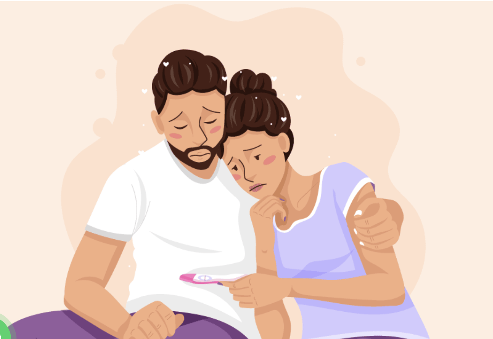
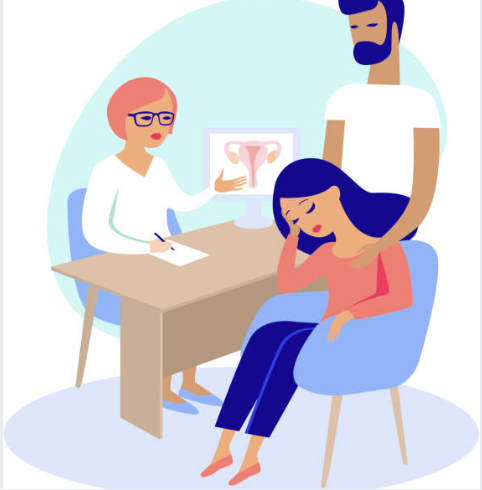
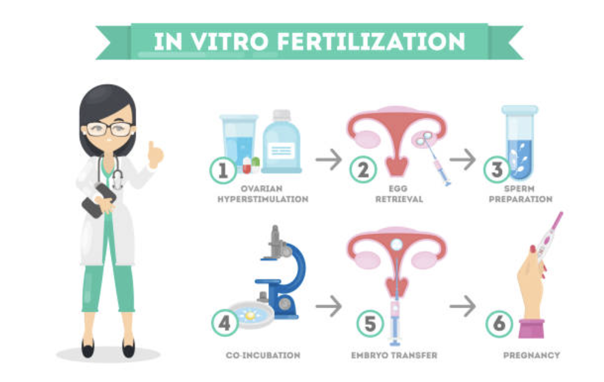
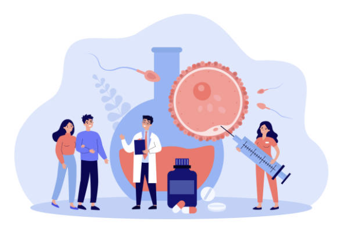
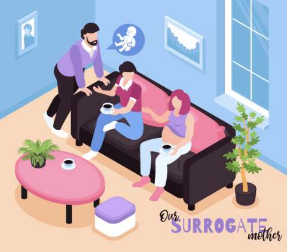

Overview
Purpose
My purpose is to provide information on technology of Artifical Birth and the current methods we are using for infertility like IVF and Surrogacy.
Audience
Anyone that is experiencing infertility
Branding
Website Logo
Style Guide
Color Palette
Palette URL: https://coolors.co/396e94-e7c24f-a43312-381d2a-aabd8c| Primary | Secondary | Accent 1 | Accent 2 |
|---|---|---|---|
| [FDE2FF] | [D7BCE8] | [5D576B] |
Typography
Heading Font: Verdana, Impact
Paragraph Font: Times, Arial
Normal paragraph example
“Build me a son, O Lord, who will be strong enough to know when he is weak, and brave enough to face himself when he is afraid; one who will be proud and unbending in honest defeat, and humble and gentle in victory. Build me a son whose wishes will not take the place of deeds; a son who will know Thee—and that to know himself is the foundation-stone of knowledge. Lead him, I pray, not in the path of ease and comfort, but under the stress and spur of difficulties and challenge. Here let him learn to stand up in the storm; here let him learn compassion for those who fail. Build me a son whose heart will be clean, whose goal will be high, a son who will master himself before he seeks to master other men, one who will reach into the future, yet never forget the past. And after all these things are his, give him, I pray, enough of a sense of humor, so that he may always be serious, yet never take himself too seriously. Give him humility, so that he may always remember the simplicity of true greatness, the open mind of true wisdom, and the meekness of true strength."
Colored paragraph example
“Build me a son, O Lord, who will be strong enough to know when he is weak, and brave enough to face himself when he is afraid; one who will be proud and unbending in honest defeat, and humble and gentle in victory. Build me a son whose wishes will not take the place of deeds; a son who will know Thee—and that to know himself is the foundation-stone of knowledge. Lead him, I pray, not in the path of ease and comfort, but under the stress and spur of difficulties and challenge. Here let him learn to stand up in the storm; here let him learn compassion for those who fail. Build me a son whose heart will be clean, whose goal will be high, a son who will master himself before he seeks to master other men, one who will reach into the future, yet never forget the past. And after all these things are his, give him, I pray, enough of a sense of humor, so that he may always be serious, yet never take himself too seriously. Give him humility, so that he may always remember the simplicity of true greatness, the open mind of true wisdom, and the meekness of true strength."
Navigation
Site Map
Content
Home page
The journey for some to having children is not as easy as it is for others. This website is intended to help those who struggle with Infertility by first, helping them navigate through the information because there is a lot of it. Second, explore possible routes to accomplishing their goals to having children and thrid, provide a sense of community for this struggle. Each individual struggle to having children is personal making it each person's individual journey. What works for one person does not necessarily mean it will work for another. It is a case by case bases. We are hoping to provide a sense of commradery among individuals and the feeling that "you are not in this alone" support.
Images for the Home page
IVF
In Vitro Fertilization is a series of complex procedures to help with fertility and genetic testing to help prevent genetic problems and provide a means to concieve children. During IVF mature eggs are harvested from the mother's ovaries and then taken to be fertilized by sperm in a controled evnironment like a lab. Then the fertilized egg (embryo) or eggs are transferred to a uterus. One full cycle of IVF is about three weeks. These steps can be separated into different parts so the process can be longer or shorter. IVF is one of the most successful reproductive technologies. IVF can be done using a couples own egg and sperm. IVF can also be done by an anonymous or known donor of egg and sperm. The chances of having a healthy baby using IVF depend on many factors. Age and the cause of infertility. IVF can also be expensive, time consuming, and invasive. IVF can also yeild multiple births if multiple embbryos are planted in the uterus. This can be a happy surprise for some but for others with unicornuate uterius this can be catasrophic. Always consult a doctor on understanding the risks of IVF and the procedures before moving forward for your infertility needs.
Images for the Page 2
 Surrogacy
A surrogate, is sometimes needed when IVF and other procedures are not viable options for the biological mother and father or other individuals that are not able to have children on there own. A surrogate also called the gestational carrier. This is a women that carries and gives birth to a child for another person or couple/inteded parent(s). The surrogate agrees to give the child to that person(s) or couple after the child is born. In the U.S. there is usaually a fee associated with using a surrogate. The cost can range from $110,000 to $170,000 this includes agency fees, surrogate compensation and expenses, legal fees, and medical costs at a fertility clinic. Something to be aware about when using surrogacy is the state laws and how they handle the birth mother. In some states the birthing mother in this case the surrogate/gestational carrier is for all intents and purposes the legal mother of the child even it is not the biological mother of the child. This means you will need to adopt your own child from the surrogat mother. All of this should be planned out and thought through before going through surrogacy.
Images for the Page 3
Wireframes
Create three wireframes for your site. One for each page and list them here
Home
Blog or commonly asked question page could be added later. Not in this class because that is more work than needed.
IVF
Possibly success stories and or contact information of fertility clinics state by state. Drop down option of state and local location
Surrogacy
Pricing in that state and state laws pertaining to surrogacy and fees assocaited with possible adoption.
